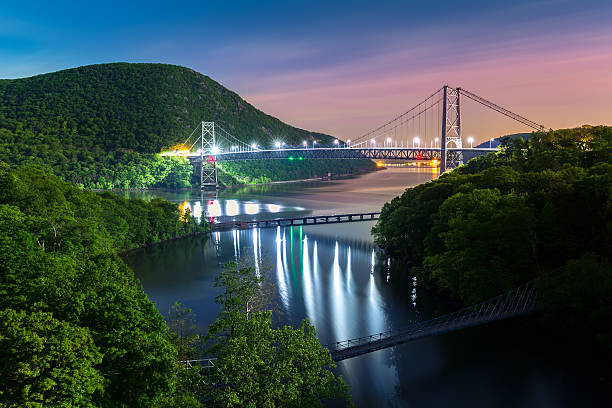
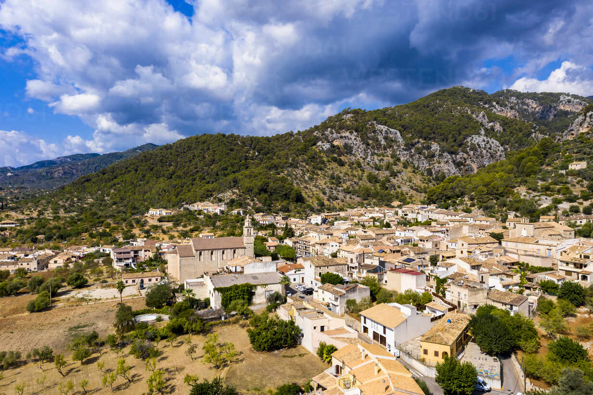
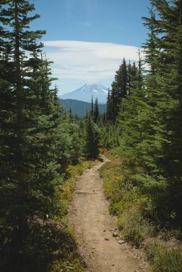
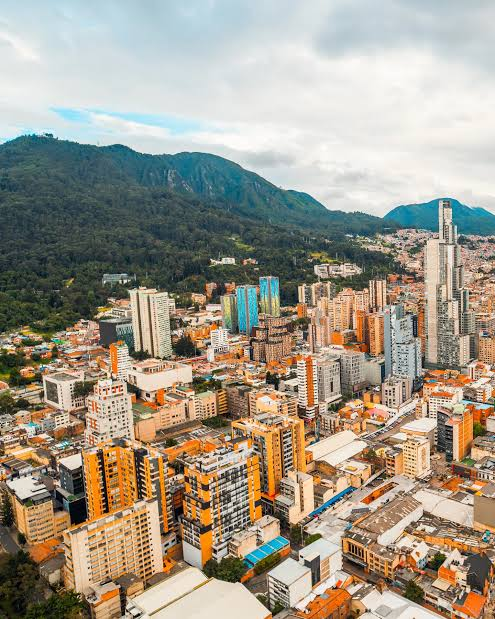

Historia e Identidad
Según los registros históricos de Valiandar, la ciudad fue fundada en el año 1768 por Eduardo Manuel Vastidar, luego de haber cruzado la Cordillera De Bardegar con su grupo de comerciantes y exploradores. Ahi establecieron un pequeño asentamiento junto al Río Vandal que poco a poco fue creciendo. A dia de hoy, mas de 250 años después, Valiandar es una de las ciudades mas visitadas del país.
Durante sus primeros años, Valiandar fue un punto de comercio muy importante para las comunidades de la region. Debido a esto fue que la ciudad construyo rutas importantes en las montañas, para facilitar la llegada de nuevos mercaderes y turistas. En consecuencia Validar crecio rapidamente.
En 1803 se descubrio una de las minas de diamantes mas grandes de la zona. Este hallazgo impulso exponencialmente la economía de la ciudad. Hizo que se invierta en maquinarias e infraestructura y garantizo un futuro brillante para la ciudad. Historiados dicen que esta es una de las razones por las cuales Valiandar se hizo tan conocida en esa epoca.
Durante el siglo XIX se construyeron muchos de los edificios que actualmente forman parte del centro histórico. En el siglo XX la ciudad comenzó a expandirse hacia los valles cercanos y se convirtió en un importante destino turístico.
Actualmente, Valiandar es conocida por mantener un equilibrio entre su patrimonio histórico y el desarrollo moderno.
Caracteristicas Principales
Valiandar está construida alrededor del Río Vandal y se extiende desde las zonas montañosas del norte hasta las grandes llanuras del sur. La ciudad cuenta con amplias áreas verdes, un centro histórico, zonas residenciales, áreas comerciales y sectores dedicados al turismo.
Datos Importantes de Valiandar
| DATOS | INFORMACIÓN |
|---|---|
| Población | 482.700 habitantes |
| Superficie | 312 km² |
| Año de fundación | 1768 |
| Clima | Templado de montaña |
| Gentilicio | Valiandarense |
| Promedio de turistas al año | 256.000 |
| Areas Verdes | 27% de la superficie urbana |
Barrios y Zonas Más Populares
Centro Histórico
Aquí es donde se encuentra el corazón de la ciudad, donde podés apreciar edificaciones históricas con más de dos siglos de antigüedad. Cuenta con plazas, un museo general llamado El Histoseo y restaurantes tradicionales.

Barrio Andares
Uno de los barrios que aún mantiene la estética antigua de la ciudad, mostrando las técnicas arquitectónicas de épocas pasadas.

Los Bosques del Norte
Una zona excepcional para quienes disfrutan de la naturaleza y el entorno rural. Ubicado al pie de la montaña, es ideal para realizar actividades al aire libre.

Barrio Domingo
Un barrio especialmente pensado para turistas. Cuenta con varios hoteles de muy buena puntuación y plazas donde se organizan ferias de todo tipo.
Barrio Vista Alegre
Es uno de los barrios más modernos de la ciudad. Alberga uno de los shoppings más completos de la región, además de restaurantes gourmet y zonas hoteleras.
El Mirador
Ubicado en la ladera de la montaña, es una zona muy concurrida por los visitantes debido a sus increíbles panorámicas de toda la ciudad.
Costumbres y Tradiciones
Los habitantes de Valiandar tienen varias tradiciones que forman parte de la identidad local. Una de las más importantes es en año nuevo, una tradición en la que las familias se reúnen en las plazas durante el primer amanecer del año. Disfrutan de las lindas vistas y se divierten viendo a artistas urbanos.